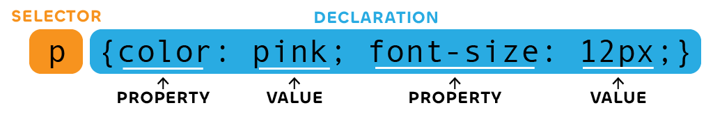
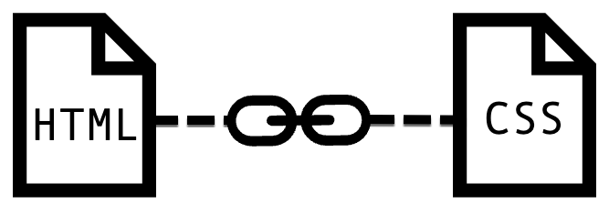
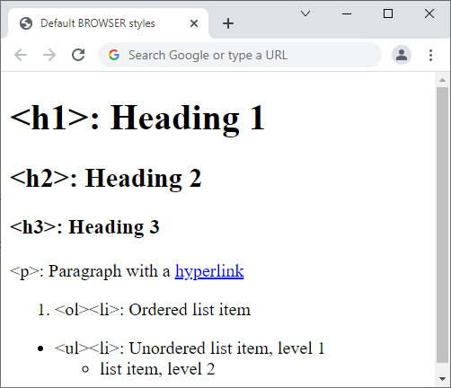
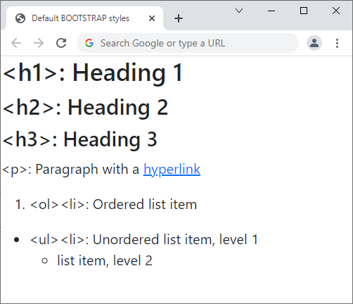

Understand what CSS is and its relationship with HTML.
Use basic CSS to modify the style and layout of your website.
Get a basic knowledge of Bootstrap and understand its benefits.
Contents of this part
In this third chapter you’ll learn how to style your website using CSS. You’ll also be introduced to Bootstrap which is a “library” of CSS components that you can freely use.
In “CSS Basics”, you will learn the syntax of the CSS language and its relationship to HTML.
The section “Practice: edit styles.css” gives you step-by-step instructions to write CSS code to modify the style of your website.
Next, you learn the “basics of Bootstrap” a very popular library of CSS components that allows you to build responsive mobile-first sites.
These skills will be essential as you start working on the group assignment, which must use styles to
3.2
CSS Basics
Summary
Learn what CSS is and why we need it for styling pages.
Learn the vocabulary of CSS: rules, selectors, properties.
Learn how to link HTML pages and CSS stylesheets together.
HTML and CSS: Separating content and style
Cascading Style Sheets (CSS) are a powerful way of modifying the look and feel of a website. Although it is tightly integrated with HTML, it uses its own computing language and syntax. This supports a very powerful pattern whereby the content and its logical structure (e.g. which item is a heading, and which one is a paragraph) is separated from its visual aspect (e.g. how big is that heading, how it is aligned, what colour is it?)
What is content without style?
Click on the button below to see what this page would look like using pure HTML and no CSS at all!
You will notice that everything on the page is still legible and visible, and that headings are still bigger than regular paragraph text.
This is because your browser has some built-in styles – but they are not visually appealing, so very few websites use them.
After you’ve had a look at the “basic” style of this page, scroll back and click on the button again
An example: The CSS Zen Garden
The CSS Zen Garden is a perfect example of what it means to separate content and style. All 218 pages of this website use the exact same HTML code, but different CSS code. See for yourself!.
If you want to draw inspiration from these pages, don’t hesitate to “inspect” the page (as you learned in section 2.3 Use Developer Tools).
The CSS language
What does it look like?
This is a line of CSS code that turns all paragraphs pink:

CSS and HTML are both programming languages used for the web, but they couldn’t look more different.
HTML uses a lot of “less-than” (<), “greater-than” (>) and “slashes” (/)
CSS’ hallmark are the curly braces: { and }
Important Definitions
A Rule is a piece of CSS code (one or more lines) which tells the browser to give specific styles to specific HTML elements
A Selector is the part of the rule which says which elements the rule applies to.
A Property is an element of style that should be modified, for example the colour of the text, or the size of the font.
A Value specifies how this element is modified. It can be a specific colour (pink, #ffcccc, etc.), a size (12pt), etc.
Linking CSS Files
Although it is possible to put CSS code in HTML files, we will follow the best practices and we won’t “mix and match”.
We will therefore put our CSS code in a separate file with the .css extension. This brings several benefits:
Styles from one HTML page can be reused in another one.
It uses less bandwidth and disk space because the styles will be only downloaded once for all the pages.
It makes it easier for teams of multiple developers to work on different parts of the code (while keeping style consistency across the website).
Because the CSS rules are “elsewhere”, our browser needs to know where to find them when it loads the HTML file. This is why we add a <link> element in the head of our HTML file.

Write a <link>
The HTML file needs to have reference the CSS file using the <link> tag. The “href” attribute uses the same logic as in <a> links or the “src” of an image, as explained in part 2.
How can you define to which elements a set of CSS rules apply? This is done through a CSS selector.
There are different types of selectors, in the table you can see the most commonly used and how they work.
While each type of selector is relevant due to its characteristics, class selectors are very useful since you can reuse them when you need a specific style (different html elements can use the same class attribute). For example, this paragraph has the class “my-class” (you will see the implication very soon).
The basic selector types are:
HTML Element: selects all HTML elements of a given type
Class: selects all HTML elements with a given class attribute. Prefix the class name with a dot (.) when using this selector in the CSS file. This list item has the class “my-class”
ID: selects an HTML tag with a given ID attribute. An ID can only be used once in a document. Prefix it with a # when using this selector in the CSS file. This item has the id “my-id”
You can combine these selectors for more complex effects (e.g. selecting the first paragraph of each div with a certain class), but the three above should be sufficient for the assignment.
Our templates already contain custom styles, you can modify them easily.
To add another style, add a class, then change its CSS properties.
Overview
You will change the style of several elements in your CV
In this example, we will create a class that makes the text purple, italic, aligned at the centre and with an orange underline.
If you are using the prj4-cv template, you do not need to link the HTML and CSS files, we’ve already done it for you!
To do so, we will follow these steps
Open the relevant HTML and CSS files.
Create a new class in CSS.
Apply this class where we want to use it.
Edit the properties of these text.
Step 1: Open the files
Start by opening the files in your copy of the CV/résumé template
You will be modifying two files in parallel:
index.html to add classes where you want them.
css/styles.css to edit the CSS properties of the classes.
Dreamweaver will let you see the results in real time, but if you are using another text editor, or if you want to check the result in a browser, it’s important to save both files to see the changes you make.
Step 2: Create a new class
Let’s open the CSS file and create a new, empty class. I’ll call it “funky-text” but you can choose any name that you find relevant.
css/styles.css
.funky-text {
}
Please note that the dot at the start of “.funky-text” is only used in CSS to indicate that this is a class selector.
In the HTML file (see step 3), you will use the class attributewithout the dot!
Step 3: Add the class where you want it
At the moment, we haven’t changed the properties of the class, but we can already decide where we want to use it. For example, in our CV template, this could be your own name, or the title of a job description.
Locate the HTML element whose style you want to change, and add the class. There are two possibilities:
The element doesn’t have a class yet, then add the class="funky-text" attribute.
The element already has one or more classes, then add funky-text to the list of classes (classes are separated by spaces).
Now it’s time to play around and decide the style you want to give to your funky text!
We are using 4 properties here: color for the font colour, text-align to centre the text horizontally, font-style for the italics, and text-decoration for the underline.
css/styles.css
.funky-text {
color: #8020cc;
text-align: center;
font-style: italic;
text-decoration: underline #ffcc00;
}
You will notice that colours are given using ‘hex codes’ combining 6 numbers and/or letters from A to F. Hex Codes are short representations of the Red, Green and Blue values for each colour. If you create a colour palette using Adobe Color, you will be able to copy the Hex Codes directly.
Congratulations!
Save all your files, open them in the browser, see if this works!
When adding styles to your document, you will notice that there are already many classes being used, that are not even part of our styles.css. That’s because they come from Bootstrap, which is explained in the next section.
Final note: the Box Model
One important use of CSS is to align elements, and to provide sufficient spacing between elements to improve legibility.
To do so, CSS relies on a concept named the box model, where each element can have three layers around it which are named, from the centre to the periphery, the padding, the border and the margin.
The difference between these three is that the padding is linked to the content and will share the same background, the border can have its own colour, and the margin is considered to be outside and will use the background of its container.
Margin
Border
Padding
Content
You can adjust the size of each of these layers, on all four sides or independently
Example code:
css/styles.css
.my-box {
background: #f0ccff;
padding-top: 10px;
padding-bottom: 30px;
border: 4px dashed #20cc20;
margin: 20px;
}
Hello! This element has symmetrical margins of 20px on all sides, a dashed border 4px wide, and asymmetrical padding (10px on top, 30px on bottom, no padding horizontally).
3.4
Bootstrap Basics
Summary
Bootstrap is a library of CSS classes, with a focus on making your website mobile-friendly.
Rather than coming up with your own CSS code, rest on the “shoulders of giants”
Use Bootstrap classes to change colours, add margins and borders, create buttons, etc.
Bootstrap is an open-source software (OSS) library, originally developed by Twitter, and now maintained by an international team.
Bootstrap is currently used on thousands of websites across the world, as it makes the styling of web pages quick and convenient.
Using third-party libraries is an extremely common pattern in the software world, because developing software is so complex and expensive that even big companies prefer joining forces and develop open source software together.
You use Open Source Software everyday without even noticing. For example:
The Android operating system is based on the open-source kernel ‘Linux”
The Chrome
The most common database library, SQLite, is used in thousand of everyday applications, from Adobe software to car satellite navigation systems
What does Bootstrap do?
Boostrap provides three things that are incredibly useful for web developers:
It offers standard styles for common HTML elements (<p>, <h1>, etc.) that look nicer than default browser styles.
You can choose from hundreds of css classes to add colours, font sizes, alignments, margins
It provides complex components such as buttons, cards, alerts, etc.
Bootstrap’s approach is to help you build mobile-friendly responsive websites. Remember that the majority of your audience will read your website on a mobile!
In addition to the link to the CSS file, you need a link to a JavaScript file which provides support for dynamic interactive behaviour, such as collapsible menus (e.g. see what happens here when using the search function).
You won’t need to worry about this, Bootstrap is pre-installed (using the CDN method) in your CV template.
Bootstrap’s default styles
See below how simple elements look like with built-in browser styles and with Bootstrap styles.

Default Browser styles on Chrome

Default Bootstrap styles
The main differences are that Bootstrap uses a sans-serif font, and that it removes some of the spacing between the elements on the page and the frame of the browser.
Colours and text
Bootstrap uses a default palette where colours are named based on their function:
Primary
Secondary
Success
Danger
Warning
Info
Light
Dark
You can use each of these colours as a text colour, by using a class which is text- followed by one of these colours, e.g. text-danger for red or text-primary for blue.
You can also use them for backgrounds, by using a class starting with bg- such as bg-danger or bg-primary
Use classes fw-bold for bold text, fst-italic for italic text, text-decoration-underline for underlined text. These classes have the same effect as <strong>, <em>, <u>, with the advantage that they can be combined and/or added to existing elements.
Text alignment can be controlled by classes text-start, text-center and text-end.
text-end means right-aligned (or left-aligned in Arabic, Hebrew, Persian, etc.).
<p class="text-center text-success">This paragraph is centred (<em>text-center</em>) and has green text (<em>text-success</em>). It contains a <span class="bg-danger text-white fw-bold">span with a red background (<em>bg-danger</em>) and white (<em>text-white</em>), bold (<em>fw-bold</em>) text.</span></p>
Result:
This paragraph is centred (text-center) and has green text (text-success). It contains a span with a red background (bg-danger) and white (text-white), bold (fw-bold) text.
Box model classes
As we discussed in the previous part, CSS relies on a box model to manage spacing between elements. Spacing is essential and makes your pages more legible and the their structure clearer.
Bootstrap provides a series of classes to create margins, paddings and borders.
For margins and padding, class names are a combination of:
m for margin, p for padding
…followed by information about the position: no letter for margins/paddings on all sides, x for horizontal (left and right), y for vertical (top and bottom), s for start (left), e for end (right), t for top and b for bottom
…followed by an hyphen/dash
…followed by a number from 0 to 5 corresponding to the size of the margin/padding.
For example, m-1 gives a small margin on all four sides, my-5 gives a large margin on the vertical axis, px-3 gives a medium padding on the horizontal axis and pt-0 removes padding at the top.
Borders can be given a specific colour and/or be rounded. In that case, you need to combine multiple classes: border to add a border, border-danger to make it red and rounded to make it rounded.
Margins and paddings don’t have a colour of their own — paddings take the colour of the element and margins take the colour of the parent.
In practice:
In the examples below, check the position of the blue box within the red one. Borders are identical in all examples, but the paddings and margin of the blue box vary.
Margins and paddings of different sizes on different sides.
</div>
</div>
Margins and paddings of different sizes on different sides.
Components
Bootstrap provides a comprehensive library of UX patterns called components, that you can reuse just by copying, pasting and customizing blocks of code.
Components include cards, carousels, navigation bars, accordions, badges, and many more…
Find out more by checking:
Part 4.4 (UX Patterns) of this guide. Use the Developer Tools or “View Source” to copy some of the examples.
Some instructions in your own CSS file may be contradicting the ones from Bootstrap. For example, a Bootstrap class gives one colour to the text and yours gives another one. Your browser will follow complex rules to decide which style should be applied and which should be ignored.
To avoid this type of conflict, you should:
Remove any Bootstrap class that you don't need. For example, if you have a class which is "bg-danger" (red background) and you're adding your own class which also changes the background, you no longer need the Bootstrap one.
Make sure that your own CSS file is called after the Bootstrap CSS file. This is the case for all templates we provide.
If this isn’t sufficient, you can increase the priority of your CSS styles by adding !important after the CSS properties.
To achieve this result…
Welcome
to a world of endless possibilities in style
Combine Bootstrap and CSS this way
This is a simple HTML structure, with one <div> element for the frame, containing a <h4> heading and a <p> paragraph.
The following styles are done with Bootstrap
On all 3 elements:
Margins and paddings, with classes such as m-1 py-5.
Fonts in CSS are defined with the “font-family” property. If you only use this property, you have to be careful, because you only have access to fonts that are installed. If you want to use additional fonts, you need to embed a web font in your page
Google fonts
Google Fonts is the most popular service for Web Fonts. To use one of their fonts:
A sidebar opens where you can see the selected font(s) and instructions
Click on “link” and follow the instructions
Google gives you one line of code to put in your HTML file, and one to put in your CSS file.
Please note that having Google Fonts activated on your page means that Google can track who is visiting your web site. Nothing is ever completely free!